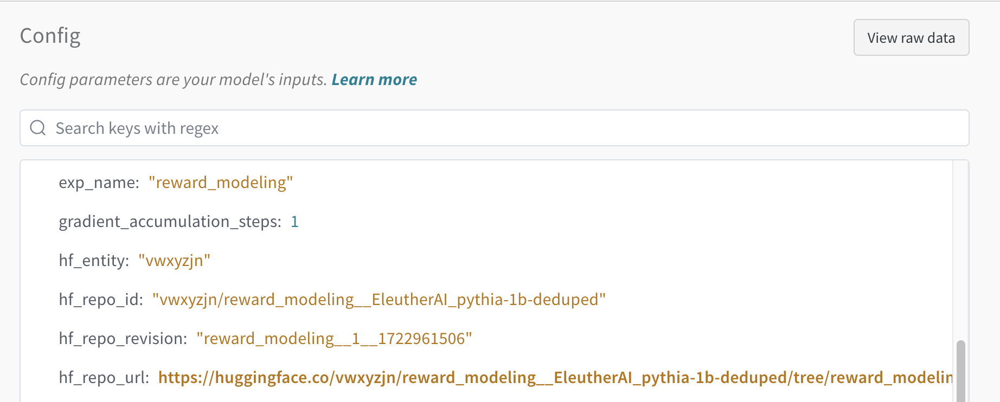
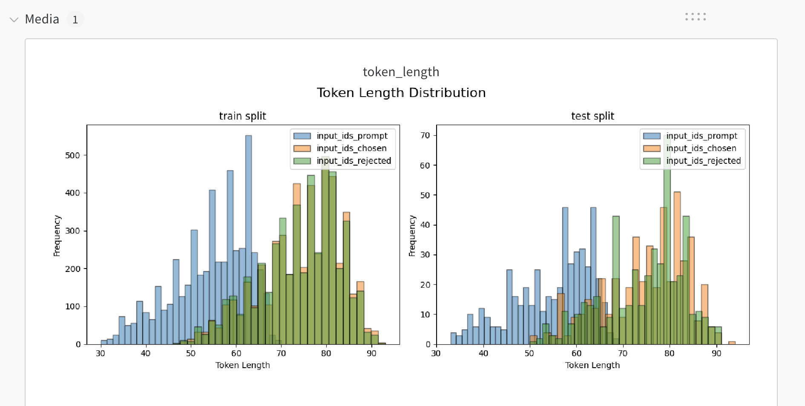
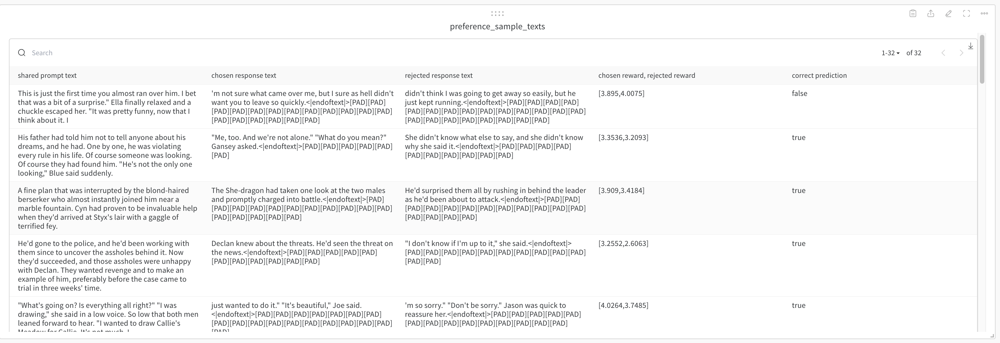

Proximal Policy Optimization (PPO)
Implemented Variants
open_instruct/grpo_vllm_thread_ray_gtrl.pycontains the script for training PPO models.
ppo_vllm_thread_ray_gtrl.py
This implementation has the following features:
- Uses a thread-based approach to parallelize the training and inference processes, based on Asynchronous RLHF.
- Uses vLLM and Ray to parallelize the training process, based on how OpenRLHF does it
Debug (Single GPU)
You can run the script in a single GPU mode to debug the training process.
bash scripts/train/debug/ppo.sh
Reproduce allenai/Llama-3.1-Tulu-3.1-8B (2 Nodes)
You can reproduce our allenai/Llama-3.1-Tulu-3-8B model by running the following command:
bash scripts/train/tulu3/ppo_8b.sh
Quality of life tools
Note that when running with --push_to_hub and --with_tracking, the HF repo is automatically tracked to wandb, so we link the tracked run and the trained model.

Furthermore, we also track the dataset length visualization in wandb (see detail in here)

Finally, we also include samples

Training Metrics
During training, the following metrics are logged:
episode: the global episode number training has gone through (e.g.,3000means we have trained on 3000 data points already -- in the case of RLVR that is prompts, which can repeat)lr: the current learning rateepoch: the fraction or multiple of the epoch (e.g.,2.7means we have trained on the dataset for 2 epochs and 70% of the third epoch)objective/kl: the KL divergence between the current policy and the reference policy (sum of the KL divergence of each response token)objective/scores: the scores of the current response, rated by a combination of reward model and other rewards (e.g., R1 style format reward, verifiable reward, etc.)objective/rlhf_reward: the RLHF reward, which isobjective/scores-beta*objective/klobjective/non_score_reward:beta*objective/klobjective/entropy: the entropy of the current policyobjective/loss: the PPO lossobjective/verifiable_correct_rate: the rate at which responses are verifiably correct, providing a measure of response accuracyloss/policy_avg: the average policy loss, indicating the mean loss incurred during policy updatespolicy/approxkl_avg: the average approximate KL divergence, used to monitor policy stabilitypolicy/clipfrac_avg: the average fraction of updates where the policy was clipped, indicating how often clipping occurspolicy/entropy_avg: the average entropy of the policy, providing a measure of policy randomnesstime/from_scratch: the time taken to train the model from scratchtime/training: the time taken to do one training stepval/sequence_lengths: the length of the sequences in the generated responsesval/num_stop_token_ids: the number of stop tokens in the generated responses
Implementation details
These are relevant implementation details on reward modeling:
- The tokenizer pads from the left, so it's straightforward to do generations.
- Disable dropout in the model: this is an implementation detail in PPO training (see p.3. in https://arxiv.org/pdf/1909.08593).
- Layer initialization: we initialize the score's weight according to
std=1 / np.sqrt(model.config.hidden_size + 1)(see p. 11 in https://arxiv.org/abs/2009.01325) - Vocab size for RM and Policy: we use the same vocab size for the reward model and the policy model. This is to ensure that the reward model can score all the tokens in the policy model. We added a
ValueErrorfor situations whenpolicy.config.vocab_size != reward_model.config.vocab_size. - Retrain on the same prompts: say we only have 10k prompts but we specified
--episodes 100k, we will shuffle the prompts at every 10k episodes and retrain on them. - Truncate responses at the stop token: we truncate the responses at the
--stop_token eosto ensure the generation is stopped at the stop token. - Non-stop penalty: we use a non-stop penalty to the reward model to penalize the model for not stopping at the stop token. For example, if the model does not end at the stop token, we penalize the model by
-10.0(see--penalty_reward_value -10.0). - Async training and generation: we follow the architecture in https://arxiv.org/abs/2310.00036 to do rollout and training asynchronously. This is to ensure that the training is not bottlenecked by the generation.
import queue
import threading
import time
class Agent():
def __init__(self):
self.param = 1
def learn(self, data):
self.param += 1
def query_generator_fn():
for i in range(1, 100):
yield i
ITER = 7
batch_size = 32
agent = Agent()
data_Q = queue.Queue(maxsize=1)
param_and_query_Q = queue.Queue(maxsize=1)
def actor():
for i in range(1, ITER + 1):
params, query = param_and_query_Q.get()
data = params
print(f"[actor] generating data π_{params} -> p_{query} D_π_{data}")
time.sleep(1) # simulate data generation
data_Q.put((query, data))
actor_thread = threading.Thread(target=actor)
actor_thread.start()
# initial param put
generator = query_generator_fn()
next_queries = next(generator)
param_and_query_Q.put((agent.param, next_queries))
# cleanba style stuff
async_mode = True
start_time = time.time()
for g in range(1, ITER + 1):
queries = next_queries
if async_mode:
if g != 1:
next_queries = next(generator)
param_and_query_Q.put((agent.param, next_queries))
else:
if g != 1:
next_queries = next(generator)
param_and_query_Q.put((agent.param, next_queries)) # note the indent here is different
queries = next_queries
_, data = data_Q.get()
old_param = agent.param
agent.learn(data)
time.sleep(1) # simulate training
print(f"--[leaner] get π_{old_param} -> p_{queries} D_π_{data} -> π_{agent.param}, time: {time.time() - start_time}")
actor_thread.join()
# async_mode = True
[actor] generating data π_1 -> p_1 D_π_1
[actor] generating data π_1 -> p_1 D_π_1
--[leaner] get π_1 -> p_1 D_π_1 -> π_2, time: 2.0003671646118164
[actor] generating data π_2 -> p_2 D_π_2
--[leaner] get π_2 -> p_1 D_π_1 -> π_3, time: 3.0012056827545166
[actor] generating data π_3 -> p_3 D_π_3
--[leaner] get π_3 -> p_2 D_π_2 -> π_4, time: 4.001934766769409
[actor] generating data π_4 -> p_4 D_π_4
--[leaner] get π_4 -> p_3 D_π_3 -> π_5, time: 5.002779722213745
[actor] generating data π_5 -> p_5 D_π_5
--[leaner] get π_5 -> p_4 D_π_4 -> π_6, time: 6.003664970397949
[actor] generating data π_6 -> p_6 D_π_6
--[leaner] get π_6 -> p_5 D_π_5 -> π_7, time: 7.004390716552734
--[leaner] get π_7 -> p_6 D_π_6 -> π_8, time: 8.00534439086914
# async_mode = False
[actor] generating data π_1 -> p_1 D_π_1
--[leaner] get π_1 -> p_1 D_π_1 -> π_2, time: 2.000866174697876
[actor] generating data π_2 -> p_2 D_π_2
--[leaner] get π_2 -> p_2 D_π_2 -> π_3, time: 4.002583980560303
[actor] generating data π_3 -> p_3 D_π_3
--[leaner] get π_3 -> p_3 D_π_3 -> π_4, time: 6.003793239593506
[actor] generating data π_4 -> p_4 D_π_4
--[leaner] get π_4 -> p_4 D_π_4 -> π_5, time: 8.005346775054932
[actor] generating data π_5 -> p_5 D_π_5
--[leaner] get π_5 -> p_5 D_π_5 -> π_6, time: 10.00696587562561
[actor] generating data π_6 -> p_6 D_π_6
--[leaner] get π_6 -> p_6 D_π_6 -> π_7, time: 12.00776195526123
[actor] generating data π_7 -> p_7 D_π_7
--[leaner] get π_7 -> p_7 D_π_7 -> π_8, time: 14.009297132492065
Acknowledgements
We would like to thank the following resources for PPO theory:
- Proximal Policy Optimization Algorithms
- The N+ Implementation Details of RLHF with PPO: A Case Study on TL;DR Summarization
- Asynchronous RLHF
We would like to thank the following resources for distributed Ray usage:
We would like to thank the following projects for general infrastructure: